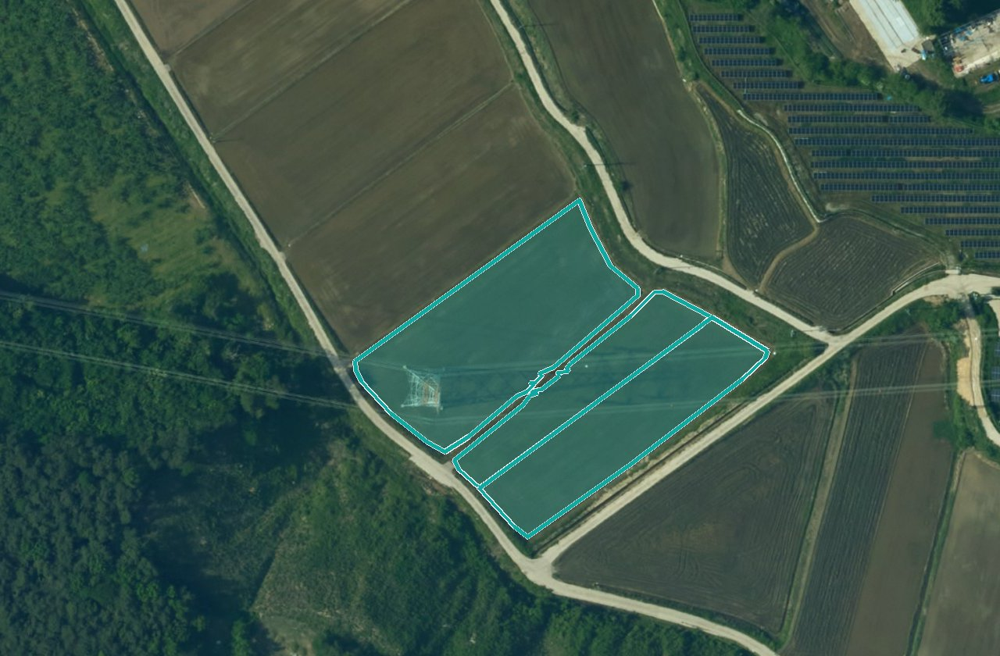
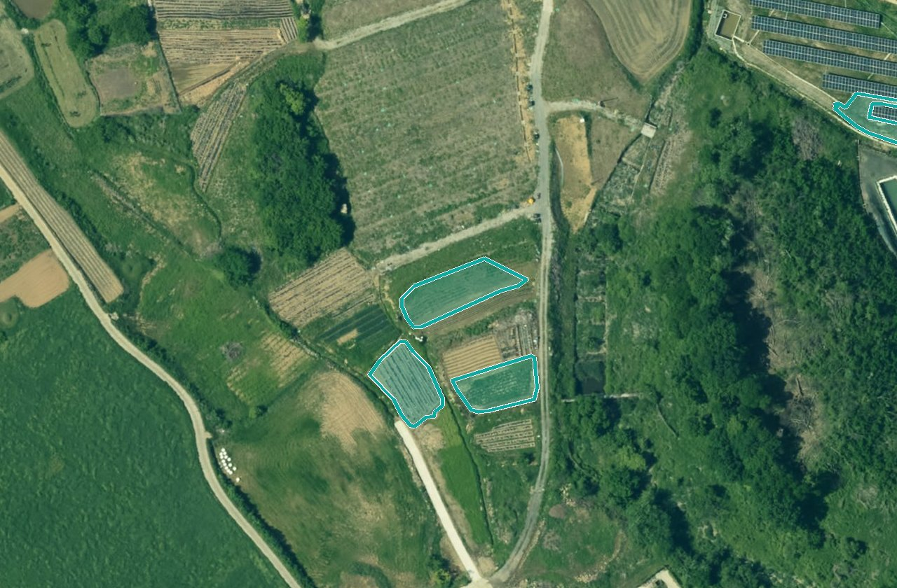
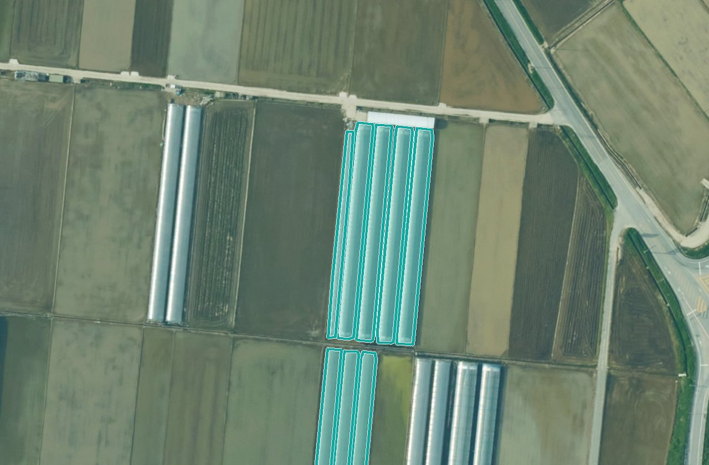

분석하기›영농관리 행정서비스
 남원시 · 2025 드론 정사영상 4시점 · 휴경·전용 판정 필지
남원시 · 2025 드론 정사영상 4시점 · 휴경·전용 판정 필지영농관리 행정서비스
경작·휴경·시설·전용을 영상으로 판정해 확인이 필요한 필지만 남깁니다.
결과 예시
현장 확인 필요 · 남원시 · 2026.10.01 기준1,035필지
- 시범강진군633필지
- 시범구례군555필지
- 시범여수시524필지
- 시범목포시110필지
영상 ↔ 결과같은 자리

 ‹›영상AI 분석
‹›영상AI 분석
경작
휴경
시설 전용
전용쓰이는 곳운영 1 · 시범 4 · 첫 결과 전 2
남원시
구례군
여수시
목포시
시흥시
익산시
운영시범 · 첫 결과 전
- 운영남원시2025년 드론영상
- 시범강진군 · 구례군 · 여수시 · 목포시2023년 항공영상
- 첫 결과 전익산시 · 시흥시영상 등록 필요
- 기관 신고남원시 103건 · 구례군 1건요청함
이 카드의 조건
- 입력 영상
- 드론·항공 정사영상 50cm 이하
- 시점
- 영농기·수확기 2시점 이상 1시점도 가능
- 걸리는 시간
- 첫 분석 뒤 표시 최근 분석 기록으로
- 찾는 것
- 경작지 · 비경작지 · 비닐하우스
- 대조
- 지목(기본) · 농지 대장 양식
- 버전 · 담당
- v2.1 · 담당 미지정 발행 때 프로젝트장 기록